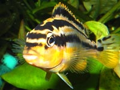

Auratus

Female and little
auratuses are yellow
Auratus is quite aggressive. But if in an aquarium there are other fish, not auratuses, not african cichlids, not ones looking like auratus, then the auratus male doesn't attack them. Calm catfish, brave botia and crowd of barbuses live in common tank with auratus without problems.
If gravel is about 2-8 mm size auratus may dig big holes in the ground down to glass bottom of the tank. Auratus carries small stones one by one from the hole to other place. So plants may float to the water surface, shells, stones and decorations may fall. They should be by a wide side down and should be digged deeper in the ground.
Auratus likes caves or bushy plants. Like kribensis and other cichlids auratuses lay their eggs within a cave.
Auratus is a clever fish, its behavior is more interesting than behavior of restless barbuses or guppy.